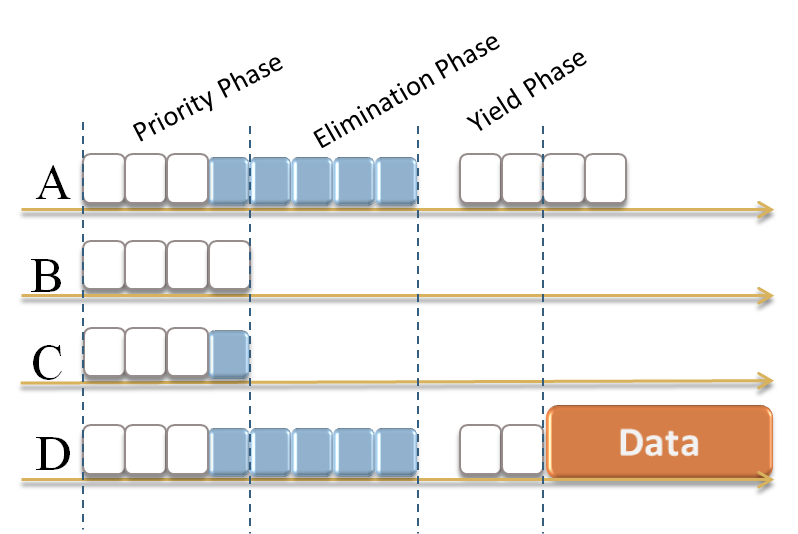

Overview
What is Ey-Wifi?
Ey-Wifi Ey-Wifi module is a ns-3 module developed within Mobsim project. Ey-Wifi stands for Elimination-Yield for Wifi networks.
The main goal of Ey-Wifi is to integrate the features of the
EY-NPMA channel access scheme in the ns-3 Wifi module.
EY-NPMA (Elimination-Yield Non-Pre-emptive Priority Multiple Access) is a contention based protocol that has been used as the medium access scheme in HIPERLAN type 1.
The main advantages of EY-NPMA are : low collision rate, more determinism and priority support.
Compared to Wifi, EY-NPMA adds the transmission of a burst in the elimination phase: it reduces the number of nodes, that will compete in next "yield" phase (equivalent to the contention window based access of WiFi)
What is ns-3?
ns-3 is a discrete-event network simulator for Internet systems, targeted primarily for research and educational use. ns-3 is free software, licensed under the GNU GPLv2 license, and is publicly available for research, development, and use.
What is EY-NPMA?
EY-NPMA stands for Elimination-Yield Non-Pre-emptive
Priority Multiple Access. EY-NPMA is a contention based
protocol that has been used as the medium access scheme in
HIPERLAN type 1. EY-NPMA is based on active signaling(black burst): a node requests access to the medium by transmitting a burst signal.
The channel access cycle comprises three phases : priority phase, elimination phase and yield phase.

Why Ey-NPMA?
- Support for Quality of Service (QoS): EY-NPMA implements prioritized access wich is very important for delay sensitive applications.
- Low collision rates: EY-NPMA has the capability to reduce the hidden node collisions.
- More deterministic: EY-NPMA access schemes is composed of three phases, each of them reduce the number of contending nodes. At the end, only few nodes remain to continue to the last phase.
Ey-Wifi module
The 802.11 MAC is similar to some parts of
EY-NPMA. This is specially true for the variants of enhanced
distributed channel access (EDCA) of 802.11e which
include a similar mechanism to the “priority phase” of EY-NPMA.
Hence, from the conceptual point of view, the main addition
of Ey-Wifi, is the addition of the elimination phase, with
the transmission of a burst. The start of the slots, and their
duration, are selected to be identical to the 802.11 variant
considered (SIFS is respected etc.).
The transmission of the
burst is done, as mentioned in Hiperlan standard, with a
modulation similar to the preamble in 802.11.
In addition, the yield phase can be adjusted, because of the
lower probability of collision after the elimination phase: it is
not necessary to apply the update of the contention windows
over several periods of inactivity of the wireless channel.
Instead, in the yield phase, a new (small) number of slots is
selected every time, leading to a shorter average access time.
Our main contribution is the implementation of th EY-NPMA scheme in Wifi networks in the ns-3 simulator, while maintaining the interoperability of the module with Wifi nodes. We aim to implement a configurable module which may enable simulation at once Wifi nodes and Ey-Wifi nodes in the ns-3 simulator.